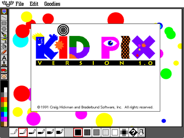
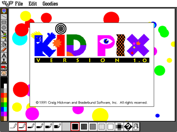
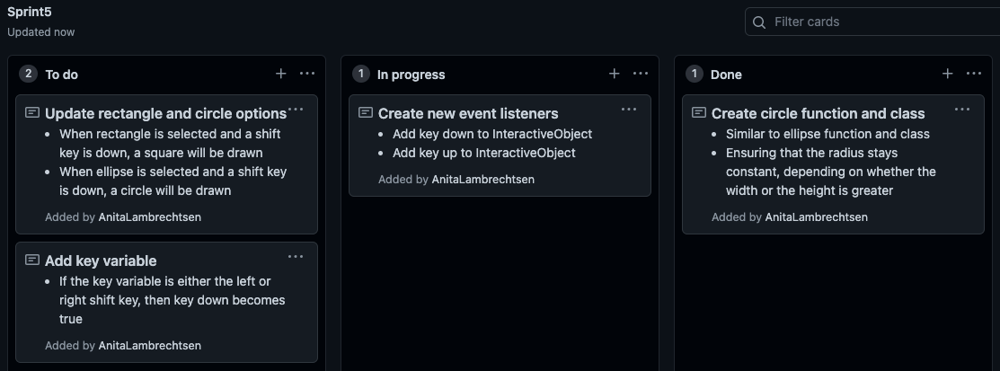

Brief
For this project, I aim to create a drawing application that allows users to draw shapes, lines and
manage colours. The overall purpose of this application is to help educate young children on the
basics of geometry through various shapes, and encourage creativity in a child’s mind; giving them
the freedom to endlessly explore principles of composition and style. This should hopefully include
the simple features of a drawing application like shape, size and colour tools, which may lead to a
more advanced canvas where older children can continue to learn from new methods and ways of
thinking about creativity. Through the development of creativity at a young age, this will help to
advance mental growth in things such as problem-solving and new possibilities, while also helping
to gain an understanding of how a child thinks or feels.
I intend to follow the agile process throughout the production of this project, as I believe
this method is best suited to achieve my ideal outcome successfully. I will also be using GitHub,
which is a website that can manage and store my entire project accordingly, including the project
backlog and projects for each sprint (which are important aspects of the agile process). GitHub can
also record and track each stage of working throughout the build, allowing access to previous
versions of my final project in case unpredicted situations were to occur.
Reference inspiration images
 

Project Backlog
Sprint One
Aim: My aim for sprint one is to create a basic canvas with a grid, that follows the movement and acknowledges the boundaries of the mouse. On top of this, I aim to include a traceable guide that once released by the mouse, a permanent box is drawn.
Plan
Sprint one board

Diagram of expected outcome

Pseudo-code
Testing
-Component test 1-
In this video testing to the left, I am testing the boundaries on the mouse through console logging the class 'InteractiveObject', which I have designed to tract the status of the mouse. It is shown in the video, that the mouse's movements (click down and back up) will only be recorded if the mouse is inside the canvas, this is because in the future of this project, the user should not be needing to draw or control elements outside canvas as that is the primary use for a canvas. It can also be seen that my grid class is successfully working in the background of the canvas and the canvas itself has been created without fault. So far, in these early stages I have been presented with no unexpected errors.
-Component test 2-
In this video test, I am testing the functionality of the draggable guide and the drawing of rectangles. As
shown in the beginning of the video, as long as the mouse stays within the canvas. The draggable guide correctly follows
the dragging of a user's mouse to indicate to them where they first clicked the mouse the box will be drawn from and when
the mouse button is released, the box also correctly follows the position of the draggable guide when released. While
these aspects of my code do work accordingly, there are also some errors that occur.
Due to the fact that the mouse's
actions are not recorded while outside the canvas, if the user was to press and hold the mouse inside the canvas, to then
move the mouse outside the canvas without the mouse being released, a box cannot be drawn. So when the
mouse returns to the canvas up, the guide still follows the mouse but no box is drawn. A similar thing occurs
when the mouse has gone outside the canvas, to return down. Because the origin point where the mouse clicked
down was not recorded, upon releasing the mouse inside the canvas, the box is drawn in an incorrect place and
there is an absence of the draggable guide. Finally, due to the method I used to create the draggable guide,
the sizing of the inner circle sometimes ends up not sizing correctly in relation to the outer box, which
results in the circle to surpass the edges of the box.
Sprint Review
In summary, this sprint has been fairly successful in terms of setting up the project for a large range of possibilities. I can track the relevant movements and position of the users mouse which is important for many aspects like drawing and selecting shapes and options. As of this sprint, the user can draw a coloured box with the assistance of the draggable guide inside the gridded canvas. While there were a few errors that I noticed to do with the user entering and exiting the mouse as well as with the draggable guide (which I discussed in detail in the testing), I intend to fix these errors in future sprints so the program is error-proof, which is something very important when dealing with the unexpected nature of children.
Sprint Two
Aim: My aim for sprint two is to create two buttons that will allow the user to draw either an ellipse shape with their mouse or a rectangle shape. I aim to have a working class and function that will correctly draw and show a draggable guide for the ellipse, as well as create a button class to manage these two possible options for drawing.
Plan
Sprint two board

Diagram of expected outcome

Pseudo-code


Testing
getBoundary(x, y, w, h, x_m, y_m){
return x_m > x && x_m < x + w && y_m > y && y_m < y + h;
In this video testing to the left, I am testing the functionality of sprint 2 and how both my ellipse, guide and buttons work. As it can be seen, moving from drawing rectangles to ellipses is manageable and works as intended for the user. It is a clear for the user what the purpose of each button is and now the user has slightly more variation in my drawing program. I had a small problem with the guide earlier on in the sprint (as seen in the image below), where the circle was not drawing in the correct position. Fortunately, this was only a very small mistake, as I quickly realised that I had forgotten to divide my x+w and y+h values by two, so the circle guide would correctly draw where the mouse was clicked. Aside from this, this sprint ran fairly smoothly as I was able to add the ellipse class and function, to be ran dependant on the status of the InteractiveButton class, which I created for the purpose of selectable buttons. I have also included a few lines of code that I have used for the boundaries for the button class. This was important to get right so the buttons work as desired. At the end of the video it is shown how the same issue with the rectangles and the user leaving the canvas also occurs when the user draws an ellipse. While I clearly have not fixed this error in this sprint, I still aim to improve this in future sprints so my program is error free and able to be used by a user seamlessly.
Sprint Review
In the end, this sprint was completed as expected and there were no major errors that I faced while building it. I successfully created an ellipse function and class so the user can draw ellipses at this current stage. Pairing with this, the draggable guide for the ellipse also is working without any remaining errors. I am satisfied with how the InteractiveButton class functions as the boundaries and task that each button is set to do, is completed in the intended way. I think this base class should work well for the future of this project, especially as most sprints aims are to include a new feature to the drawing project, each that should have a different button to be able to use it. All the current issues are ones that I addressed in sprint 1, as the same thing occurs when drawing ellipses if the user enters and exits the canvas, which should be something I will fix in a future sprint.
Sprint Three
Aim: My aim for sprint three is to create a colour swatch that consists of the colours and ranging opacities for each one in my colour array (colArray). With this, the user should be able to select the colour of the shapes drawn from a clearly presented group of colours
Plan
Sprint three board

Diagram of expected outcome

Pseudo-code

Testing
-Component test 1-

The image to the right, I am testing if the swatch's layout prints correctly. There are many ways that a swatch can be printed out and displayed for a user. I wanted to be sure whilst designing this feature, that it was not overwhelming to the user (minimalist) and that it was printed in a way that would be recognisable to the user as a colour swatch, without any written indication. To print the swatch, I created an array called swatch_set, so I could loop through the colour array that contains my colour palette, with the varying opacities on a new line. Using this method of printing my swatch out complies with the relevant implication of future proofing. This is because I can easily add more colours and/or opacities that will be looped through and added to the swatch.
-Component test 2-
In the video to the right, I am testing if my main swatch function works how intended. This would be when a colour and opacity is selected, the object is drawn with the correct properties. My swatch class is very similar to my interactive object class. The few key differences is that a text variable is not required, and instead of the fill colour changing while hovering over or selecting the button, the outline colour is what changes. It was necessary to have the outline change colour because the colour is what the user is selecting. From here, I ran the swatch through the loop that I have already created. As you can see in the video, the colour and opacity will correctly change for both shapes when a particular button in the swatch is selected, meaning that the implementation of this component went smoothly.
Sprint Review
In summary, this sprint worked accordingly and no impactful errors occurred while I was building each component. While considering the aesthetics and recognisably of my swatch, I was able to print my intended design successfully with a loop through both arrays. On top of this, I was able to then create a swatch class successfully and make each unique colour and opacity into a button that the user is able to select and change the colours of shapes. I believe that this was an important step to follow through the principles of agile, as an essential aspect of a drawing function is the option to change the colour of items. I am satisfied with how this sprint went and no unexpected errors occurred.
Sprint Four
Aim: My aim for sprint four is to add two new shape options to widen the drawing possibilities for users with a triangle and line option. As well as this, I also want to implement a clear canvas, undo and redo option for shapes that have been drawn.
Plan
Sprint four board
Diagram of expected outcome

Pseudo-code


Testing
-Component test 1-

As can be seen in the first testing image to the left, I was successfully
able to create a triangle class and function by starting with beginPath(),
which then followed manually drawing and moving the next line to a
certain point. This class and function did
correctly make a triangle, although I found it difficult to work out the
correct point values for an isosceles triangle. The triangle in the image
is one of my many attempts to assign the correct values for the object.
As well as this, I also wanted to create a line tool, where the user can
draw a line that spans from the mouse down point to the release point.
This was not difficult to create a new button for, and due to the agile
process, I will embellish this option in future sprints. As seen in the video
to the left, I managed to successfully work out what the correct variables
were to print the triangle as intended, and the line is also working
accordingly. Both new objects can also have their colour and/or opacity
adjusted, with option bar that can be easily switched between.
-Component test 2-
For the second component that was implemented in this sprint, I added in a clear canvas option. To do this, when the button is clicked, the object array is set back to zero. When this occurs, all items that have been drawn on the canvas will be removed so the user can now create new drawings and/or clear a cluttered canvas. When adding this feature, there was no unexpected errors that occurred during the process.
-Component test 3-
To create an undo option, I popped the last object that was drawn in
the object array. As you can see in the first video to the left in this
component, the undo button worked fairly well, as only one object would
be removed once the undo button was properly clicked on. An unintended
error occurred that I was quickly reminded of when building this button,
of which there are no boundaries on the clickable buttons located within
the canvas boundary. Due to this, as can be seen in the console log, when
the undo button is selected to undo, a new object will be formed to
remove from the object array when clicking an option in the toolbar. This is why the undo
button needed to be clicked more than once before a noticeable object was removed from the
canvas. To fix this error, I set a new variable to the width and height of the canvas
without the buttons, so a new shape can only be drawn within those set
values. Due to the fact that I am following the
agile process, I implemented a simple boundary check, which
will be later improved so manual measurements do not need to be assigned
particular values.
As seen in the second video, upon adding the
boundary feature, the user can no longer start a drawing in the toolbar
area. So if the user clicks on a button such as the undo button, no
object will be drawn and the undo button would not need to be clicked multiple
times to be functional. What I have also demonstrated in this video is that
this does not apply when the user ends the shape in the toolbar, meaning that
a shape may be drawn over buttons and covering them. This issue I intend
to fix in future sprints, as currently the functionality of my program due
to this and the other issue with boundaries I previously mentioned, is
not at an acceptable standard.
As shown in the third video in the
component test, upon fixing up this error, the undo function now
functions in the way that I had intended it to be.
-Component test 4-
When building this final component for the sprint, I used a similar method to the undo component. Through creating a removedSet array, I slightly altered the undo component as instead of only popping the last object drawn from my objectSet array, I then pushed the item into the new array called removedSet. From here, I reversed this action when the user intends to redo this aspect, by instead popping the last drawn item in the array and pushing it to my object array. This component mainly worked the intended way, although I noticed that an unexpected error would occur when there was nothing in the object or removed array. To fix this error, which has been shown to be fixed in the final video of this sprint, I included an if statement, so that items will only be popped from the arrays if they are greater than zero-in-length.
Sprint Review
In summary, this sprint worked mostly as intended and all expected components were eventually successfully incorporated into my main program. In this sprint, after finding the correct values for the triangle points, I added two new shape options for the user in this drawing program to give them a wider variety of accessible tools. I am satisfied with how the isosceles triangle is drawn upon the release of the users mouse and will embellish the line option later on in the production process. For the second component that was added in this sprint, the clear canvas option was built smoothly without any intended errors and ran in the correct way. Upon creating the undo and redo components, I noticed that some form of boundaries will also need to be implemented in this sprint, so components will work the intended way. It is clear that this method used (as discussed above) will need to be addressed and altered in future sprints, due to the fact that it does not follow the future proofing relevant implication. Once this aspect was included, I was satisfied with the way that the undo and redo options behaved with varying possible inputs that a user could make, which I tested above. I believe that this sprint was successful in the regard where almost all errors that occurred where properly addressed, and many aspects were still able to be cleanly build without errors.
Sprint Five
Aim: My aim for sprint five is to add a feature to my shape tools that is very common in drawing tools such as Google Drawing and Adobe Illustrator. I aim to give the users the ability to hold down their shift key, that will turn a rectangle into a square or an ellipse into a circle, if either button is selected and the shift key is held when the mouse is released.
Plan
Sprint five board
Diagram of expected outcome

Pseudo-code
Testing
-Component test 1-
In this first component test, I am testing whether my circle class functions
in the intended way. As seen in the video, I have not altered the draggable
guide to match the circle, as all I have done in this first component
is ensure that the circle is being drawn correctly, in relation to the users
mouse when selected. The implementation of this component went smoothly,
without any unexpected errors.
Another noticeable addition that I made in
this sprint is to do with styling and aesthetics. I slightly changed the font
to still be readable, though less bold, so I have room to add more features in
the near future. As well as this, by making the clear button red, users will
recognise this as a sign of a warning due to things like stop signs and traffic
lights. This is important because it will clear the whole canvas, so they
are warned to consider clicking the button beforehand. Its position in the
top left corner also is to subtly aid the users, improving the usability of
my program, as users should also be familiar with the idea of a clear or exit
button located in either the top left or right corner of a screen or object. Using this
similar logic, an undo button with a pink/light red tone also indicates that it will do a
similar action to a clear canvas button, as instead of clearing all objects,
only one object is removed. The green redo button, which is a colour of nature
and renewal, also makes aesthetic sense to colour it this colour, so users have
a subconscious idea that nothing will be removed when selecting this button.
-Component test 2-
For the second component test in this sprint, I was testing the implementation of the two event listeners, 'KeyDown' and 'KeyUp'. Through console logging the key that was help down and then released, I was able to test if I was successful in this aspect. This was a simple addition to my drawing program that happened without any unintended errors.
-Component test 3-
For this next component, I focused on the draggable guides of both my
rectangle and ellipse buttons while the shift key is held. From this first
component test, I am satisfied with the way that the rectangle guide is,
although the circle guide is not sizing correctly. To create the rectangle
guide, I updated the height and width variables to be the same, depending
on what the smaller value is. I believe that this is a good design and
should work when it comes to actually drawing the shape. The ellipse on the
other hand, mostly works as intended, although, in some cases the ellipse
will extend the square when the mouse crosses over the diagonal line that
can be seen in the guide.
To fix this error, as seen in the video
below the first one, I altered the variables of the circle, so it will not
extend the box. Due to this, I am satisfied with how the guides for both
buttons behave, and the implementation of drawing the shapes should happen
in a similar way.
-Component test 4-
As seen in the first video test of drawing a circle while the shift key is held component,
when I attempted to draw the circle while the shift key is held and the ellipse button is
selected, a circle is drawn in the correct position if the mouse and shift key is released at
the same time. Unfortunately, the circle was also being drawn if the shift key is hit without
the mouse being down while the ellipse button is selected. This means that
there is an error in the section of my program related to how the shape is
being drawn and possibly the variables that are being used to draw the circle.
Fortunately, the drawing of the ellipse has not been altered if no additional
keys are pressed with the ellipse button selected. I also commented out the draggable
guide component, as I believed that it would be easier to ensure that the two
components work co-dependently before combining the two of them. Due to this aspect,
I also noticed that there were two possible ways that I could have the
circle drawn while the shift key is held. The first possibility would be where
the original draggable guide was in the previous component, starting at the where
the mouse was first down. This would then have the diameter of either the width or
height (depending on what was smaller). If I was to continue with this option, the
box that the circle is drawn it will be disconnected from the mouse. This is because you
cannot force the mouse to go in certain positions like where the perfect
circle would end in javascript, as the user must be able to control their mouse
due to the malicious possibilities of designers, such as forcing a mouse to click a
link that will download malware onto the user's device. The second design
option is to keep a base rectangle for the draggable guide, and the ellipse in
the centre will change from an ellipse to a circle depending on whether the
shift key is still held.
As seen in the next video, I decided to go with the
second design for drawing a circle while the shift key is held. This is because
I believe the design is cleaner and easier for users to understand. This means
that the mouse will be constantly still attached to a guide and the ellipse
or circle will be drawn from the centre point of when the mouse is first down,
to when the mouse is released up. To fix the error that occurred in my last test,
I altered the variables that I was using when drawing the circle and with a set
design option, it was easier to result in the outcome I intended, so the
circle is drawn correctly. In the final video, I combined both the correct
way the circle is being drawn and the altered draggable guide to fit the
second design. I am satisfied with how the ellipse cleanly shifts from an
ellipse to a circle from within the rectangle when the shift key is held
and I believe this is easily understood by users.
-Component test 5-
When implementing the shift key option to the rectangle shape component, the first video highlights the errors that I were faced with. If I was to use the first design method, this would once again separate the mouse from the guide, and so I updated this method as well, to match the second design. On top of this, I noticed that the square was not able to be drawn in the top right or bottom left. In the second video, I resolved this error through using abs, as the values would become negative and unable to be drawn as the rectangle was being drawn based on whether the width or height was larger, so in particular directions this would incorrectly change. The draggable guide follows a similar design to the ellipse, which can be seen in the second video, where the transition from a rectangle to a square is also clean and ended up being following the design that I had intended. Mostly, in the implementation of this component, I followed a similar method to the ellipse button, with if else statements for whether the shift key is held or not.
-Final test-
Finally, I did one last final test of this sprint to check that everything is working accordingly, as there were many components to this sprint. One noticeable feature that I altered at the very end was to take out the circle button. I did this because now the users can create circles through the ellipse function, so a separate button for the same feature is unnecessary.
-Usability test-

At the end of this sprint, I thought it would be fitting to do a usability test. The relevant implication of usability is an important thing to consider, especially when designing a program for the intended audience of children, so everything must be relatively comprehensible. As the main purpose of this program is to be a drawing program, if it is difficult to produce drawings, then the usability of the program is failing. Later in the development of my program, I will also do a test on another person to test for unexpected behaviour. From a personal test, I found my program to be easy to use and draw with. I was grateful for undo and redo buttons as there were a few mistakes made along the way, which is a benefit in the regard of functionality. Overall, I am satisfied with the progress that I have currently made, although there are still further features that I hope to achieve to enhance and develop drawing possibilities.
Sprint Review
This sprint did have some unintended errors, although I am satisfied with the final outcome. In this sprint, I introduced circles and squares that can be drawn when the ellipse or rectangle button is selected and the user holds down the shift key while drawing. I did this through creating a new event listener which was successfully incorporated into my InteractiveObject class. When presented with some errors, I realised that there were two main designs that I could pick between when coding how the ellipse and rectangle moves into a circle or square when the shift key is held. I am satisfied with the design that I chose to follow through with, even though there were some unexpected errors which occurred while building the design. Some of these errors include incorrect placements of drawn objects in relation to the mouse and glitching draggable guides. Thankfully, I was able to internalise any additional errors that occurred in the process of building this sprint. As well as this, I made a few minor changes in terms of the aesthetics such as colour and placement. At the end of this sprint, I decided that it was also a good idea to do a usability test to see if my program is on track to matching the original brief.
Sprint Six
Aim: My aim for sprint six is to improve the boundaries of the canvas which is an error that I have previously mentioned earlier on in the project. This occurs when the user is drawing and the mouse leaves the canvas, or is down while entering the canvas. The user should also not be able to draw over the options, but still be able to draw them, as the options are located on the canvas.
Plan
Sprint six board

Pseudo-code
Testing
Component test 1
In this first component test, I figured that the way to solve the error occurring when the mouse leaves the canvas is through adding an if condition. While the mouse has left the canvas, if the mouse is down, then the mouse should be considered as up, and the boolean 'inBounds' and 'mouseIsDown' is false. This fixed the error that has been occurring because an object is drawn once a mouse that has been down is released, so as soon as the mouse leaves canvas the object will be automatically drawn at the edge as it is set to be up. This also means that when the mouse is entering the canvas held down, it will not be considered down, so an object will not be drawn upon release.
Component test 2
For this second component, my aim is to ensure that the user cannot draw an object over the toolbar. This is because it is crucial for the user to still be able to interpret the toolbar with all the buttons, for the purpose of usability, which would not be possible with a shape covering them. I did this using a JavaScript method which is to create a separate area from the main canvas that will be clipped. As the mUp() is still considered when the user's mouse leaves the canvas, the shape will be drawn at the edge of the canvas, although it will be drawn underneath the toolbar. As the toolbar is still located on the canvas, I enjoy this feature in my program instead os setting the mUp() to be within the clipped area. This also leaves the possibility for further options in the future of my program. These could be for the toolbar to be moved or minimised within the canvas that over the canvas and the objects drawn within it. In this first video test, everything is working seemingly as intended, although the toolbar alterations when hovered over or selected are not running. As I shortly noticed, this was because I had not included ctx.restore() at the end of my update class, which meant that these features of the toolbar were being clipped in that particular area. As seen in the following video, by including this line of code, my program was functioning as intended and these boundary errors have been resolved.
-Noticed issue from previous sprints-
Upon further trialling this sprint, I noticed a very small but important error that has a large impact on the functionality of my program. This was improved by one line of code, but as demonstrated in the first video, I had previously forgotten to set the InteractiveButton.selected to "" once the undo or redo array has been popped. This meant that it remained selected after this action has occurred, so wherever you select on the screen if either is selected, that action will continue to occur. This was quickly resolved, as seen in the second video, but demonstrates the importance of extensive testing.
Sprint Review
In summary, this sprint was implemented fairly successfully and the components that were introduced into this sprint were eventually running as intended. While this sprint was relatively short in comparison to previous sprints, it was one that was crucial for the functionality and way that my program behaves. Ideally, a user would not need to leave the canvas, but in order for a program to be functional, it must be able to handle all forms of use, and improving this was the main aim for the sprint which I believe was achieved. While there was a minor error that occurred when clipping my toolbar from the whole canvas, this was shortly resolved. Choosing to allow the user to still draw in the area within the toolbar, only underneath, was the option that I chose to continue with and am satisfied with. This sprint also ensured that other issues cannot occur with leaving and entering the boundaries of the canvas, which is an important aspect of my program through considering a mouse that is down outside the canvas to be up and out of bounds.
Sprint 7
Aim: My aim for sprint 7 is to improve the layout of the canvas more options can be available to the user in this program, and it is presented in a familiar but professional way. Within this, I aim to create a class with just a rectangle and text, so I can add instructions where they are needed. I also aim to create a new class with a main button, and then sub buttons, so within this sprint I can also develop the line and triangle object options.
Plan
Sprint seven board
Diagram of expected outcome
Pseudo-code
Testing
-Component test 1-
In this first component test, as seen in the image to the right, I edited the layout of my canvas. While this was tedious, it was successful and resulted in being a fairly identical image to the one that was intended in my expected diagram. To replicate this, I added six more colours into my colArray, to give the user more options for the colours of each shape, which spans as the majority of my top toolbar. Another adjustment I included to replicate the intended layout for my canvas, is adding in the buttons that will ideally be options for the user in the near future. While these buttons do not have a purpose yet, they will most likely be the focus of the next sprints. Finally, the last thing I added as a part of this component is a new rectangle with text class. This was fairly simple, but I created a class that is not a button, but can print text over a rectangle drawn. The intention of this class is for information and instructions to the user. This may be needed in the future more than currently, though the current reason I created this class is for informing the user about the shift option for rectangles and ellipses, as this does not need to be a separate interactive button. On top of this, through altering the layout of the toolbars, I also altered the boundaries and size of the canvas to ensure the boundaries were correct according to the new toolbar and that the users will still have enough space to draw on the canvas.
-Component test 2-
For the second component test in this sprint, I was testing my SecondaryButton class, designed for the child buttons within their parent ones. While there were a few possible options for how I could design feature, such as creating arrays with the child buttons within the parent button, I decided that the method I chose was the most efficient for the purpose of sustainability and future proofing. Through using a similar process as my InteractiveButton and Swatch class, the class runs almost identically, if the parent button selected equals the parent button that the SecondaryButton falls under. As I still wanted the button to print regardless of whether the parent button was selected or not. As seen in the image to the left, when testing this on the small option under the line parent, through a few trials, most commonly the outcome would result in the button not being printed. This was often due to my check to see if the parent that was selected is the same as the one that is unique to that SecondaryButton resulting in the class to be unable to function. Fortunately, this was shortly solved with slight variations in my code. As of this current moment, it appears that this class runs successfully before I implement the further options for the shapes.
-Component test 3-
As seen in the first video of this component test, the aim for this component is for varying thicknesses for my line tool, operated within the most recent SecondaryClass that I implemented. To draw the different versions with each button, I was checking what button was selected through matching the text with SecondaryButton.selected.text. In this second video, it is demonstrated how an Uncaught TypeError occurs with this scenario of code, as when the parent class is first selected, a child button selected does not yet exist (null) because the user has not yet selected a child button. From this, this error occurs, which is not an ideal design because the functionality of my program would be not matched to the expected standard. Aside from the error, the small, medium and large thickness options are working as intended. Due to the error, I created an if, else if statement to check if there is a SecondaryButton selected so the null error does not occur and the component is running as intended. From here, I also adjusted the draggable guides to match the thickness of the lines that will be drawn based on what SecondaryButton is selected.
-Component test 4-
Upon fixing the errors and complications, completing component 4 was quite simple. I used the same layout for the programming as the line thickness variations. The only noticeable difference was that instead of altering the thickness, I adjusted the starting point of the triangle for the right-angle option and did not alter the draggable guide.
-Component test 5-
For my fifth component, I decided that it would be easiest to have a default SecondaryButton selected when a parent button is selected. This means that the usability of the program will improve for the user, as the buttons become less complicated and more efficient to use. To do this, I included a boolean called 'defaultButton', which is set to true if it is the default button and false if it is not. From this, by checking if there is a default button and there is no secondary button selected yet, the default button will automatically become selected. As seen in the first and second videos to the left, there were two errors that occurred when I first attempted to implicate this component. The shown in the first video, demonstrates how including a default button is mostly functional. The error occurs when the user was to select the parent button originally selected after using the undo or redo buttons. This occurs because when the SecondaryButton is set to null after the undo or redo button is selected, the SecondaryButton will remain selected because of my if statement, 'if (SecondaryButton.selected === this || (this.defaultButton && SecondaryButton.selected === null )) {'. The second error, as shown in the second video, occurs when the user clicks on a child button from a different parent. This means that the original button is unselected which is not intended. To fix both of these errors, I included the if statement, 'if ( InteractiveButton.selected && InteractiveButton.selected.text === this.parentButton ) {', to wrap where the buttons change when the buttons can become selected. By wrapping where the boundary can be retrieved in if statement, the second error is fixed because it can now only be retrieved if the parent button is selected. This also means the first error is resolved because the default button will be selected when the parent button is first selected. These fixes are shown in the last video, where it is demonstrated how all the components I have implemented in this sprint have been added as intended.
Sprint Review
In this sprint, there were a few unexpected errors, but overall, I am satisfied with the final outcome. In this sprint, I originally altered the layout of my canvas to allow for more shape options and colours that the user would have access to. This in turn meant that I had to alter the boundaries and then create a WordRect class. My next component was to design a SecondaryClass for the child buttons that would only be able to be selected if the parent button was. This had some unintended errors and once I had resolved these for this sprint, it became apparent in my following sprint when actually running different object options that the errors were not fully resolved. The next component That I implemented in this sprint was further line thickness options falling under the parent line button. Originally, null type errors occurred due to InteractiveButton.selected.text being null, that was fixed by first checking to see if the object existed. From this stage, I was able to both add the variations in the line tool and triangle tool. The last component in this sprint that I added was a default button for these shape options, to further prevent errors and improve the usability of my program. There were two errors that came with my first attempt at this component where a child button would not be selected as intended, that was resolved with another if statement.
Sprint 8
Aim: My aim for sprint 8 is to create a crescent option for the user. I intend to either use two arcs or a combination of two circles to successfully complete this. A crescent button also allows for further possibilities for the user to draw with.
Plan
Sprint eight board
Different approaches for this sprint
As seen in the image above and the two images to the left, there were two
possible ways I could design the crescent functions. In my drawn diagram above,
the first approach to create a crescent moon shape would be to draw two circles,
and then the second circle cuts the first circle in the area where they overlap.
As I have also demonstrated, a design element that I have to consider is
if the second circle should be the same or a smaller size than the original circle to create
a different looking crescent. As also seen, the second approach is to draw two
separate arcs to connect together, and what is drawn is the filled area inside the
arcs.
Through a separate site, I attempted to recreate a very basic version
of how the two approaches could appear when drawn. This was done so that throughout
this trialling period, nothing in my code would be impacted. Roughly recreating
the idea of approach one proved to be very simple, as it would just be dependent on
the size and position of the second circle which is easily adjusted. While there
may be easier ways to attempt the second approach, I shortly noticed which approach
appears to easier and more functional. This is because, if the size or position
was altered in the second arc, then the connection points would need to change
and while achievable, I believe that the first approach would be the most suitable.
The first approach will be better future proofed as this technique should be
fairly malleable.
Pseudo-code
Testing
-Small bug fix-
While this was not a part of the original aim of the sprint, I noticed while doing a further look through my program that the triangles were not being drawn correctly in some circumstances. I was aware that this would be a short fix of errors, and so I am including this brief component within sprint 8. As shown in the first video, it is clear that when the user draws a triangle at a reasonable speed, then it is drawn as intended, whereas if it is drawn at a fast speed, then the triangle would not be either an isosceles or right-angle. This is because, as seen in the video, the third point of the triangle was set to where the mouse finished. Due to this, when the mouse had released, from there being a small period of time where the mouse is still travelling, as the calculation of the y position for the final point is this.y3 = this.yMouseStart+this.h and height is calculated off of this.yMouse - this.yMouseStart so the calculation causes the error. As shown in the second video, the way I fixed this error was through changing thr final y position to just be this.yMouse.
-Component test 1-
For the first component, once I had decided on the first approach for the
moon shape. On Stackoverflow I found two circle-circle intercept functions that should meee
my need.
https://www.w3schools.com/tags/canvas_arc.asp
and
https://stackoverflow.com/questions/45329292/how-to-make-a-crescent-moon-shape-in-html-canvas
Their process was understandable, but it saved me from doing the complicated maths
that was required for a shape such as this one. In this first component test, I was testing the
variations or crescents that was easily possible through slight adjustments
to the defined variables.
-Component test 2-
As seen in the video to the left, for this second component I was testing to see if the shape will be successfully drawn dependent on the position that the mouse clicks on the screen. As I am still using set values for the crescent that is being drawn, once I had determined which design I liked the look of, I had to determine the ratio of these values so it can be applied to the unique values of the user's drawn shape and remain consistent with the styling.
-Component test 3-
This last component is to combine the previous components and create
a shape option that the user can select to draw with. As seen in the first
video, the size of the crescent is being determined by the greater
value of either the width or height. The size of the crescent is being
defined correctly, although there are some issues around the positioning
of the shape. The first clear problem is, due to the fact a crescent
is just an even circle, that the crescent is just drawn in the first
corner of where the guide is. To make it clearer to the user and so they
can easily understand where their shape is being drawn, I intend to
use a similar design to my square and circle options as I believe this
method is both clear to the user, and their mouse while dragging to
draw the shape remains connected to a draggable guide. The second
issue with the positioning is that due to how the shape is drawn from
left to right, I will need to ensure that how the crescent is drawn
is reversed when drawn from left to right to fix this error.
As
shown in the second video, in an attempt to successfully complete
this component, it is now very close to my intended design. The
moon shape now draws from the centre of the guide which was done
through setting the starting position to be determined by the centre
(this.xC and this,yC) and the width/height depending on how it is
being drawn. The only issue that is present in this component is
that the position of the circle when drawn from right to left is basing
the second circle's position that is being cut instead of the centre
postion of the main circle which is the crescents centre.
As seen
in the final video for this component, I was able to fix this error
through reversing the drawing process that occurs normally to
create an inverse crescent. With this fixed, the crescent button is
now performing how I had intended.
Sprint Review
To review this sprint, there were two possible approaches that I could have pursued in this sprint, and I feel confident in the approach that I decided to take. Overall, I am satisfied with the final result of this sprint, despite a few errors and many design possibilities. Upon finding and individual's functions, it was very helpful and allowed me to consider more towards the design of the shape, which is something that is still very important, especially with a program that has active interactions with users. All the errors that I faced while completing this sprint was due the positioning of the moon shape within the rectangular area that the user draws with. They were relatively small errors and were pretty manageable to improve. Another this that can be reviewed for within this sprint is that I believe the approach that I decided upon is the best for the future proofing and sustainability relevant implication as there are many ways that a crescent can be made with and, using a circle-circle intercept function could be useful in the future to create a further range of shapes. Finally, while this was not an intended component of this sprint, I also fixed an error that occurred with how triangles are drawn in my program.
Sprint 9
Aim: My aim for sprint 9 is to create a moving ball function that will allow a user to create a ball travelling up and down. The user should be able to resize and control the area that the ball bounces in.
Plan
Sprint nine board
Pseudo-code
Different approaches for this sprint

As shown in the image above, there are two possible ways that I could go about
this sprint and sizing the ball. There are many options that a ball could become 'moving',
whereas my main aim for this sprint is to just create a ball that moves up and down,
that the user can change the size of. For the first approach, the moving ball would
only be sized by the width. This means that while the height is greater than the width,
the ball would bounce reasonably as expected within the box. While this is not an error,
it could be slightly off-putting for the user when the width is greater than the height,
as to allow for them to size large moving balls, there is not much of an alternative.
When the width is greater than the height, the centre point of the ball would bounce
from line to line, so while it is not within the box entirely, it is still following
the boundaries of the box to an extent. The second approach contradicts what has
been my intention, as it would require up, down, left and right movements. It is
uncertain how much this may change the understandability this approach
would be for the user, and while the ball would remain within the box guidelines, this
approach may also be confusing to a user.
If in future sprints where myself or
an external programmer wishes to extend my program, I believe that through
creating an individual up down motion button for a ball, the first approach is
easily built upon. On top of this, the user will have a slightly more restricted
ability to resize and have to deal with a singular button that causes a ball to
travel both directions could be overwhelming. On top of this, the function for the
second approach would be a lot more complicated, and as I am following the agile
process, it is best to first construct a standard function that can be progressed in
further sprints.
Testing
-Component test 1-
In this first component test, as seen in the image to the left, I am testing my MovingBall class. The design of this class is slightly different to the other shapes that I have included in this program, because I needed to consider the animation aspect. My aim for this first component is to have the ball start from the position of the mouse, because then future components can develop on this idea. In the first video, the x start point was a fixed height from the point where the user clicks their mouse and the ball starts at the bottom of that height, travelling to where the mouse is clicked. This issue occurred because the y_b value is not the y starting position, it is actually the position that the ball travels to. As I had set the y_b position to this.yMouseStart instead of this.yMouse where the mouse button was released, the ball was travelling to the start position. In the second video, by changing the y_b to the end position of the mouse, it had worked as planned.
-Component test 2-
For the second component, I am testing how the MovingBall class functions
as an object that a user can manipulate. The way that I am allowing the
user to change the size of the ball that is bouncing is through the width which
is occurring as intended. I also set the height that the ball will travel is
equal to the height of the box that their mouse travels, which has also been
successful. It appears that the issue with this component is that the position
that the ball starts has two incorrect positions when the start position is to the right
of the end position when drawing from right to left. When drawing from right to left,
if the height is greater than the width, then the position that the ball starts will be
a radius away from the centre position. However, when the width is greater than the
height, the circle will be a diameter away from the centre position.
To fix this
issue, when the user is drawing an object from left to right, then the
position the circle starts as is this.xMouse-(Math.abs(this.w)/2), whereas
when it is the opposite, that total half width is adding to the this.xMouse.
-Component test 3-
As seen in the first video, another thing that I had to consider was the
speed that the ball was travelling. As I thought it would be a more fun
alternative to setting a constant speed, I decided to randomise the speed.
While randomising the speed creates a good variety of possibilities for the
user. The only issue with this, as shown in the first video, is that while
there is a low probability of this occurring, a ball could randomly start to
travel exceptionally fast or slow. This could confuse, overwhelm or bore the user,
which is why I needed to add in an upper and lower bounds into the random() calculation.
As seen in the second video, the balls are travelling at reasonable speeds with some but not
extreme variation. I used Math.floor(Math.random() * (250 - 50 + 1) + 50), which
set the max speed to be 250 tics and the minimum speed to be 50.
-Component test 4-
With my bouncing ball, the centre point is where the mouse is released so to have the ball bouncing
in the middle of the rectangle I subtracted half the diameter of the circle from the x starting point
so the ball would always start in the middle. By adjusting the
start position it is fairly simple to have the ball bounce on the inside line of
the box space, and as seen in the first video, when the height is greater than
the width this works ideally how it should. However, when the width was greater than the height
then the ball would be drawn outside the rectangle. This was fixed by subtracting the width
from the height of the rectangle and choosing the smaller of the two values meant that the
ball was always within the rectangle.
While it does not technically work how it should in that video, as the width would be greater,
then the ball would not be able to move until the height is greater and there is no way that
his could really be changed unless the size was not entirely decided by the width.
Because of this, I have chosen to continue with the alternative approach I have been
taking throughout the addition of this class. While the ball does surpass the edges
of the box, it does it in an understandable and clean sense.
Sprint Review
In summary, I am also satisfied with the way that this sprint has progressed, as while there were a few technical errors which occurred, these were resolved in the most ideal way that they could, and remains clear to the user. There were a few times throughout this sprint where there were multiple approaches that I could take in terms of the design and usability. The first decision that I made was that the size of the ball would be determined by the width of the area that the user draws. As discussed above, I believe that this was the best approach to take for my program. Throughout the sprint there were a few errors that occurred in terms of the positioning of the ball, the speed and the sizing. I believe that all issues were effectively resolved through agile processes. The first issue I encountered was how I designed my MovingBall class, where and where the ball would first start and bounce to and was resolved swiftly. Issues to do with different ways of dragging the mouse were also resolved and I had to consider the possibly speeds that the balls could travel at. Lastly, I had another two approaches that I considered, although it proved that there was only truly approvable approach as the other one was not functional enough with the first approach that I chose.
Sprint 10
Aim: My aim for sprint 10 is to implement a star option for the user. Within the star interactive button, I aim to have multiple secondary buttons which will allow the user to have further customisation around the number of points the star they wish to draw contains.
Plan
Sprint ten board
Diagram of expected outcome
Pseudo-code
Testing
-Component test 1-
For component one of this sprint, when I was working on the calculations I quickly
realised that there was a fair amount of complexity. As I needed to have an inner and outer
circle and then calculate the angles between the lines depending on the number of points
on the star. Thankfully when I was searching online I found a few examples on Stack Overflow
and this example was the easist function to implement into my existing code so exactly like
how I implemented the crescent code I also implemented the star code and credited the author
including links to where I found it in my code.
https://stackoverflow.com/questions/25837158/how-to-draw-a-star-by-using-canvas-html5
I once again had to find the ratios I preferred visually through comparing the shapes with
different amounts of points, inner and outer radius'.
-Component test 2-
For the second component, once I had sorted out the ratios that I wanted
to use and believe looked the most aesthetically pleasing or familiar for the
user, I moved on to making this shape able to be drawn by the user. Once again,
similar to my circle and crescent shapes, a star was drawn from the centre. As
demonstrated in this first video, for my first attempt to test how it would
be drawn, it is clear that I cannot make the x and y points based off of where
the mouse starts (this.xMouseStart and this.yMouseStart), as a star is drawn
with cos and sin curves, so the start position is the centre (this.xC and
this.yC). The second error with my first attempt was that the radius cannot
only be based off of the width, and must be dependent on the smaller value of
either the width or height, which follows a similar principle to what I have
been following with previous shapes.
As shown in the second video for this
component, through the aid of an external star function, the implementation
of the main purpose of this sprint was fairly clean. Through fixing these
two errors using methods I have similarly used in previous sprints, my
star button was functional and clear for the user. As well as this, because
the function is quite flexible, the design is well future proofed for times
I may want an alternative to the star design or number of points.
-Small bug fix-
As seen in the first video in this test, I noticed that when you click while an object is selected, then that click would be added into the object array. This was clear because if you had clicked, then that click would also need to be removed or re-added to the array. An example of this is shown in the video to the left, where when the user clicks, an empty object is drawn each time the user clicks the screen while a shape option is selected. When I first noticed this, I assumed that it was not an error, and that it was just a small object being drawn. To test if this was true, I printed out the width and height of an object that is being drawn, as shown in the image in the middle. From this test, it is clear that when the user clicked on the screen, then an object with zero dimensions would be drawn (the zero values for width and height were given when I clicked the screen). As something with a width and/or height of zero should not be considered as an object, this is an error that needs to be fixed. This was a simple fix, as I created a loop before an object is drawn with the conditions that the width, height, radiusX and radiusY cannot equal zero. As demonstrated in the last video test, this approach was successful and now objects are no longer drawn if they have no dimensions.
-Small improvement from past sprint component-
This is a styling improvement instead of an issue, but it is a relatively small adjustment to improve the clarity for the user. My main concern around the shift options for the rectangle and ellipse, was that it was not fully clear to the user what it meant by this. Especially if younger children or beginner designers may use this program in the future, they may not be familiar with a shift button option. My approach to improve the communication to the user was through changing the text of the rectangle and ellipse to square and circle when the user presses the shift button. As shown in the first video, I first tested if this would work through altering the text of all interactive buttons when the shift key is pressed. As this component was successful, I was able to move onto the second component which is just focusing on the two individual buttons. The way that I individually altered the text of the rectangle and ellipse button was through adding a new variable within the InteractiveButton class, called 'altText'. Through this, I was able to alter the text that is presented to the user on the button if the button has an altText and the shift button is down. By designing the alternative text like this, I am complying the sustainability and future proofing relevant implication because in the future of my program there may be many cases where I will want a button to be able to have a different text depending on unique conditions. As shown in the second video, this small addition to my code was successful, and I believe that it aids in the usability of my program.
Sprint Review
In this sprint, the implementation of the star function was successfully and mainly occurred as intended. I am satisfied with the outcome of my program and the way this sprint has progressed. Through a star function that I have found from Stack Overflow, I was able to adapt this function into my code for a star button. It was very useful to find a function that could be applied to a program such as mine, as the process of calculating the output would have been quite difficult. There were a few very minor errors that I have encountered throughout the process of building this code, and so this sprint remained quite clean as these problems were easily resolved. While these were not originally intended to be included within this sprint, I noticed one error that needed addressing and resolving along with one design element that I could improve on. Both of these additional focuses within this sprint also were successful and there were no major unexpected errors that occurred. I believe that this will be my last sprint of this project because I am satisfied with how my project is at and fulfills my intended aim. There is still room where I could expand further in this project, as shown on my project backlog, but the state that my project is at, is an acceptable standard.
Functionality test
To test the functionality of my program, I decided to run it through Safari to see if there are any differences that may impact the functionality of my program for other users. As seen in the video above, thankfully, my program runs almost entirely identically. There is only one noticeable difference between the two browsers, and that is that instead of the objects drawing from the point of the mouse, in Safari my objects and guides are drawn based off of the centre of the user's mouse. This is only a small detail though, and is not impactful enough to damage the functionality of my program, as users are still able to use my program in a successful way.
Usability test
To test the usability of my program, I asked my younger sister to attempt to use my drawing program for the first time and narrate her experience. This, like the functionality test, is an important process to do because the program designer can miss what an unpredictable user may do. I believe that she quickly got the hang of the program, and I had positive feedback once the test had been completed. While watching what she was doing, if this project was to extend further any further, I could look into creating the undo, redo and clear button into a separate version of button, as then the user could have their object selected remain this way when going to select one of the three buttons. But aside from this, the test was successful.
Git commit history
Reflection
Throughout the course of this project, to ensure that it ran effectively and that I produced a high-quality digital technologies' outcome, I used the Agile project management method. To manage and store my project, I have used GitHub as a tool to aid in my keeping to the Agile structure. I have been able to update and expand on my project backlog and individual kanban boards per sprint. In the initial stages of beginning my project, in alignment with the Agile process, the first step that I completed was creating a project backlog. As it has been discussed earlier on this planning document, my project backlog was a crucial first step because it contained all of my compiled sprints that I was intending to complete and abide by throughout the course of my project. If I had not completed this first step in the Agile process, then I would not have had a guide to follow as my project developed, which could have meant that I would not have met my goals and intentions by travelling off course from my endgame. As well as this, through a project backlog I was able to plan a sprint order by priority. If I had not done this, then it could have been tempting to focus on unnecessary parts of my project and lost valuable time that could have been towards the most crucial aspects. From this, each individual sprint also had a kanban board which meant that I could track and follow each component in a sensible manner. Within each sprint I also used planning components in set orders such as pseudocode, general design work such as sketches and natural-language explanations. Through doing this, it ensured that I could have a clear understanding of each part in my development process and future programmers can also be able to gain a comprehensive understanding of my development process. Within each sprint, I thoroughly tested each new addition to my program and then reflected upon these new elements to insightfully determine the next stage in my development process whilst abiding to my original plan. After each completed sprint, I committed the changes that I had made to GitHub, where it can store and even recover historic versions of my programming process in a case where this is needed. There were many things that I learnt throughout following the Agile process, some of which include the importance of extensive testing and planning. There were many times when I was very fortunate to have exact layouts of what I am required to complete and how to stay on track. This process has most definitely enhanced the overall product of my program because decomposing each component, then trialling, and then reflecting, allowed me to notice even the smallest of errors and has taught me how to thoroughly consider different outcomes and possibilities. I believe that the main aim of my program has been achieved through following this Agile process, as I believe and have tested, a child of various ages should be able to enjoy and learn from this program.
Relevant Implications Summary
Sustainability and future proofing
Throughout my program, I have addressed the relevant implication of sustainability and future proofing. This relevant implication is important to consider, as a program should be adaptable and have the ability to expand with new features. Throughout the process of designing this program, I actively kept this relevant implication in mind. In the case of a drawing program, working through a button-by-button process for the majority of the time, makes for a program to be easily expanded on. This means that if future developers wish to build new features into the program, each class and/or function is separate and unique to the intended task. Due to this, it has been very easy to implement new components in my code, because each individual button predominantly had its own unique code path so did not impact other function. Beyond this, when designing each new class and/or function, I ensured that I was designing it with the intention or ability to be expanded on. As for just one small example of this within my code, by creating a colour array with a loop to print out each colour string, it is very easy to alter or increase/decrease the colours available. So when I later did include more colour options, this process was very easy. My code has been extensively commented in a clear and understandable way, so anyone else who wants to expand on my project can easily do so. On top of this, all of my variable, function and class names are appropriate and easy to interpret, and each filed document is also clear with the names and placements of items. As well as this, due to my thorough documentation following the Agile process and each sprint being easily accessible on GitHub, future programmers can clearly follow my design process.
Usability
The relevant implication, usability, is also very important to focus on while building a program. It focuses on the idea that a digital product is able to be understood and properly used for it's desired purpose. That errors can be recognised and recovered from throughout the process, that all information is displayed in a clear way, so the proper requirements of the program is executed in the most efficient way. For a program that is solely based on user input, it is crucial to have a good usability to ensure that the process through using this drawing program was effective, intuitive, and able to be understood. Just one example of this in my program, is the placement and colouring of my undo, redo and clear buttons. In the first case, having a red clear button in the right corner of the screen acts as a warning in two senses. The first is because an exit button or a clear, or cancel button is normally placed in the top right-hand corner of the screen. This means that a typical user will subconsciously be familiar with this idea, meaning that it is less likely a user will accidentally select this button. The second is the colour red which is also a clear warning with an association to things such as a stop sign. This was also discussed earlier when I was designing these buttons. Another example of this is the hover over change in colour, especially with the design of my buttons, as the secondary buttons cannot be interacted with until its parent button has been selected. This means that the user has an indication of what buttons they can interact with, before selecting anything. On top of this, the draggable guides give users an indication of what their drawing action will do upon release. The buttons in my program are also designed like conventional buttons, so this should not confuse the user with their purposes. On top of this, I ensured that I did a few personal usability tests, and one video test with a user that was not familiar with my program, to gain a further insight on how the usability of my program could be improved. These are just some of the many examples where I actively considered the usability throughout the design process.
Functionality
The final relevant implication that I have addressed is functionality. Functionality is about having a digital product that operates correctly, without any errors or crashes. This is also a very important relevant implication to consider while building a program, as if there are many errors throughout a program, then the desired outcome cannot be reached. A functional program should perform with the expectation of errors and unexpected inputs/outcomes, and have the ability to either prevent or recover from these occurring. Especially when focusing around the input of a user, as mine does, because users cannot be relied upon to not use the program in unexpected ways that could generate an error. If a system crashes or does not run with ease, then it's functionality is poor. To ensure the functionality of my program, I have been actively testing my program while following the Agile process. This has been a vital step throughout the development of my code. I can guarantee that without testing and following the Agile process, the functionality of my code would not be at an acceptable standard. Upon the spotting of each error, I either immediately fixed it, or kept a very close eye on the status of the error while focusing on other elements to shortly return to, and improve it. At the stage of my code, there are no instances where my program crashes, and no errors that would impact the functionality of my code. To test the functionality of my code, I ran it through a Javascript code checker to ensure that there are no unwanted errors, and I tested my program in a Safari browser. Both of these tests did not show any concerning signs for the functionality of my program.